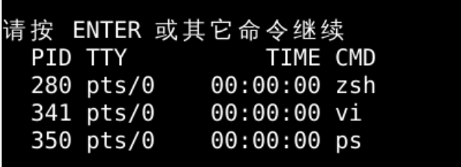
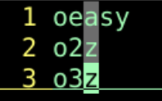
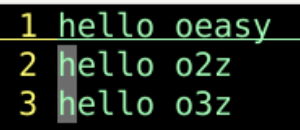
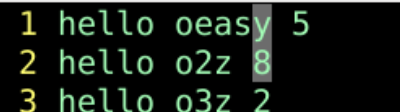

:[range]global/{pattern}/{command}range 是执行的范围pattern 是搜索的模式command 执行的命令global 是很好用的内部命令:!ls:!python %:!javac %:r oeasy.txt:r !ls:r !ls -lah:r !cat oeasy.txt:r !curl -s 'http://oeasy.org':!ps
:!kill -9 341
:.!tr '[:lower:]' '[:upper:]'.! !tr '[:lower:]' '[:upper:]':%!tr '[:lower:]' '[:upper:]':1，2!tr '[:lower:]' '[:upper:]'
:%!awk '{print $1}':%!awk '{print $2}'
:%!awk 'NR > 1' | sort -nk 3 | column -t%! 执行范围range是所有行awk 'NR > 1' 从第二行开始awk| 管道sort -nk 3 使用第3列进行排序column -t 用空格隔开